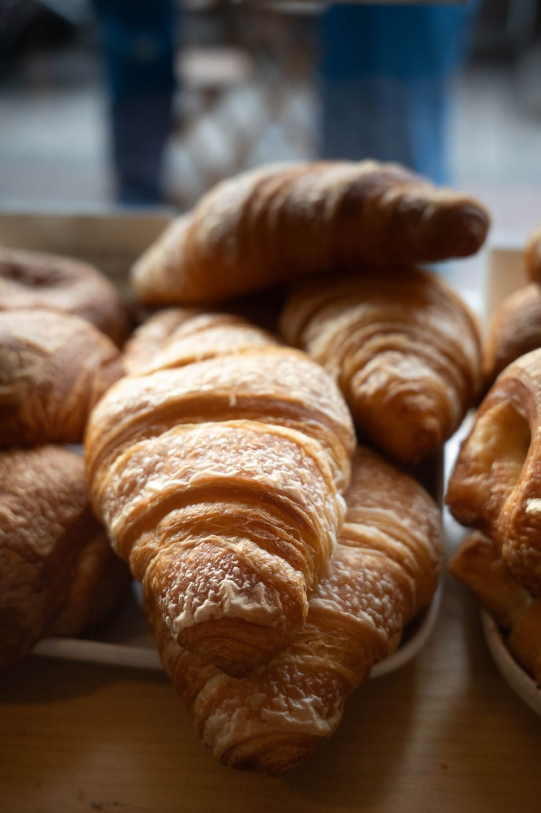
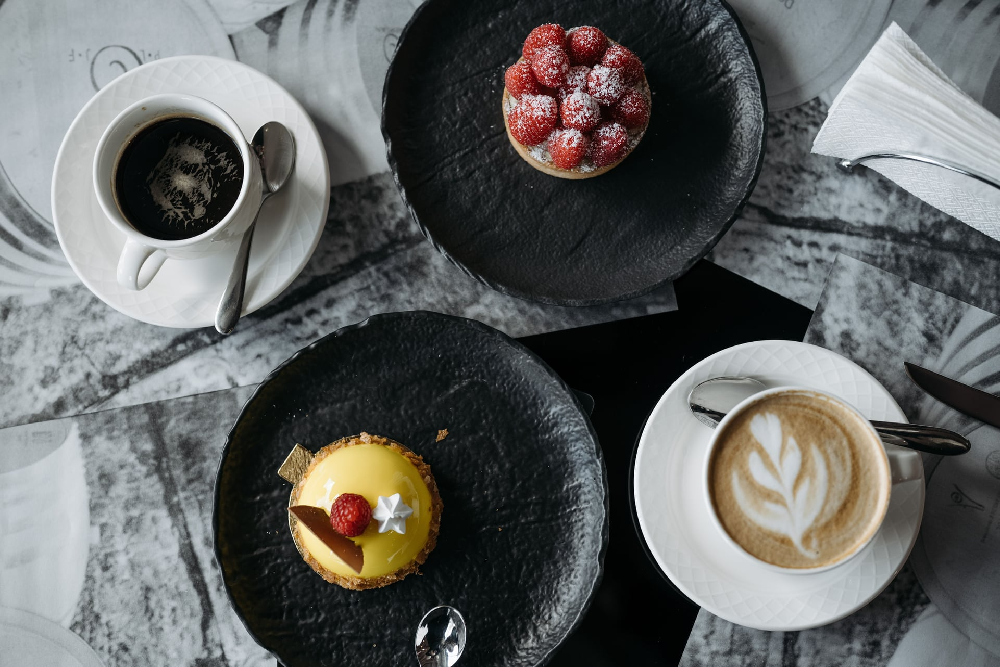

ПОЗИЦИЯ 01СЛОЁНОЕ
Круассан
420 ₽ цена макета
01 ХЛЕБ, СЛОЙКИ И ДЕСЕРТЫ
Круассаны к утреннему кофе, хлеб на закваске и десерт к чаю. Выбирайте, что взять сегодня.
Посмотреть менюВыпечка к завтраку, хлеб домой и что-нибудь к чаю.

О БУЛОЧНОЙ
«Слой» — дизайн-концепт булочной с небольшой витриной хлеба и выпечки. Ассортимент и цены придуманы для макета; оформить настоящий заказ здесь нельзя.